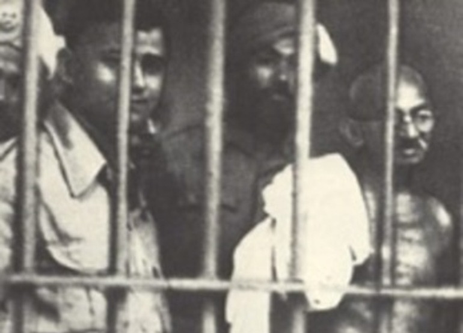

Jan 1908 Gandhi goes to Jail

Apr 1919 Amritsar Massacre
Aug 1920 Nonviolent Resistence
Jan 1930 Declaration of Independence
Aug 1942 Indian National Congress
Jun 1944 Gandhi visits Muhammed Ali Jinnah
Aug 1947 Indian independence
Sep 1947 Fighting between Hindus and Muslims